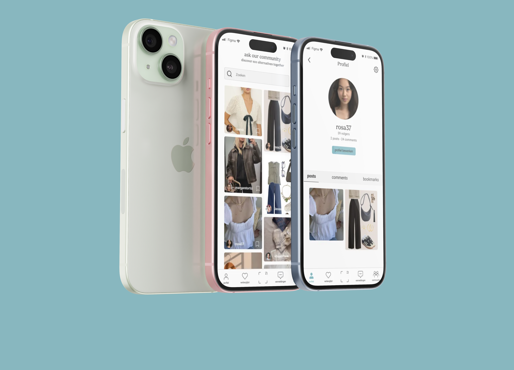
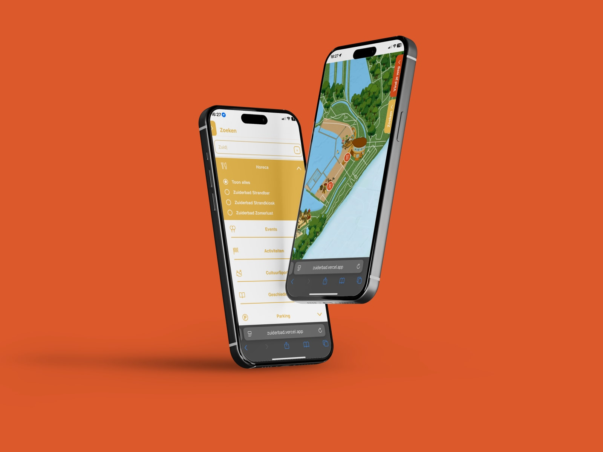
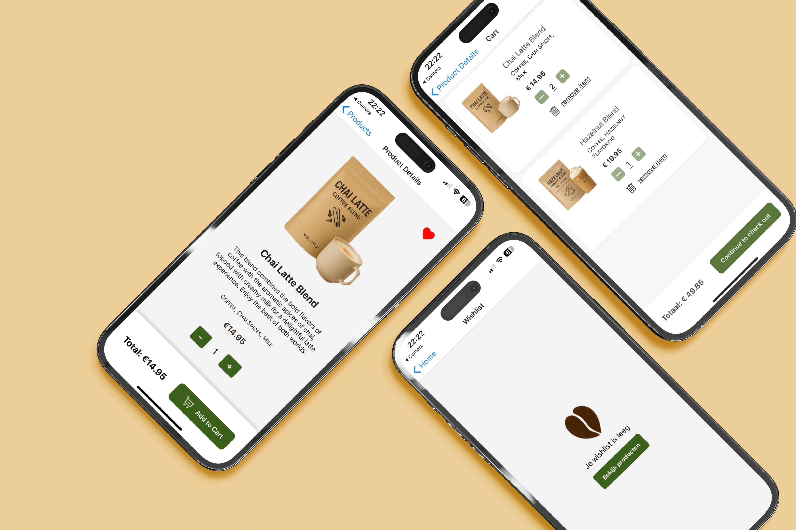

van creatieve chaos
naar krachtige interfaces

ecopick - duurzame mode app
Solo Project — Sep '24 - Dec '24


Zuiderbad - Interactieve Kaart
Groepsproject — Sep '25 - Dec '25


Cup-a-cino - Webflow
Solo Project — jan '25 - jun '25


Mochi Foodkiosk - Blender
Solo Project — Nov '25

OVER MIJ
Hey! Ik ben Amina
Ik ben een UX/UI-designer die denkt in verhalen in plaats van schermen. Wat mij drijft, is het creëren van digitale ervaringen die niet alleen mooi zijn, maar ook iets doen met mensen. Ik geloof dat design pas echt werkt wanneer het emotie oproept en tegelijk helder, logisch en eerlijk blijft. In elk project zoek ik de balans tussen gevoel en structuur, tussen mens en merk.
Mijn kracht ligt in empathie, detail en het vermogen om chaos om te zetten in iets intuïtiefs. Zo bouw ik interfaces die niet enkel functioneren, maar blijven hangen.
Ik werk het liefst met muziek op, een koffie binnen handbereik en ideeën die soms te wild beginnen maar altijd goed landen.